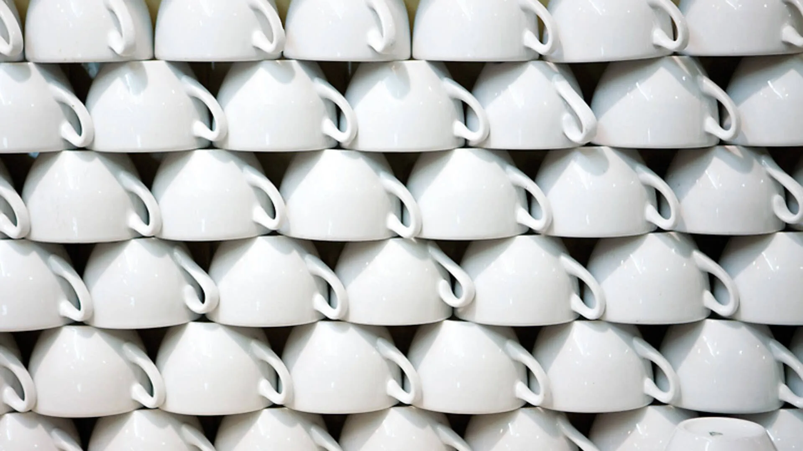

2 de mayo de 2026
De lechería a chocolatería
Antes de 1947, al fondo de la tienda había vacas.

Cuesta imaginarlo ahora, porque no queda nada, pero en el número 11 de la calle de Petritxol, antes de ser una granja de chocolate, había una lechería. Y no cualquier lechería: una de aquellas que tenían su propia vaquería detrás. Al fondo de la tienda, tras lo que ahora es el salón, estaban las vacas. Se ordeñaban cada día.
La leche no se vendía en botellas. Se vendía por petricons. Un petricó era una medida tradicional catalana para líquidos — el equivalente a un cuarto de porrón, aproximadamente un cuarto de litro. A mediados del siglo XX, las vaquerías aún la utilizaban para servir la leche fresca directamente a quien la compraba. Ibas a buscarla con un vaso, con un bote, con lo que tuvieras, y te la medían con el petricó.
Esto era normal en Barcelona. El Barrio Gótico estaba lleno de pequeñas vaquerías urbanas. Algunas eran muy pequeñas — tres o cuatro vacas en un patio interior —, otras más grandes. Las vacas vivían en la ciudad, a menudo en condiciones que hoy nos parecerían inimaginables, y daban la leche que se consumía alrededor.
La transformación llegó en 1947. Magí Cases y su mujer Roser vieron que ese modelo se acababa: las lecherías urbanas iban desapareciendo, la leche empezaba a distribuirse en circuitos comerciales más grandes, y el negocio de las vacas en el patio no tenía futuro. Lo que sí tenía futuro era el chocolate, y Petritxol ya tenía tradición chocolatera desde el siglo XVIII.
Así que donde había habido vacas, pusieron una chocolatera. Donde se había servido leche en petricons, empezaron a servirse tazas de chocolate deshecho. Y lo que antes era un sitio donde entrar a buscar leche se convirtió en un sitio donde la gente se sentaba. Todo cambió, y a la vez no cambió mucho: la casa seguía siendo un lugar donde se tomaba leche, simplemente ahora venía mezclada con cacao.
De las vacas, hoy, no queda nada. Del nombre de la calle, quizá sí. Del ritual de venir aquí a tomar algo, seguro.